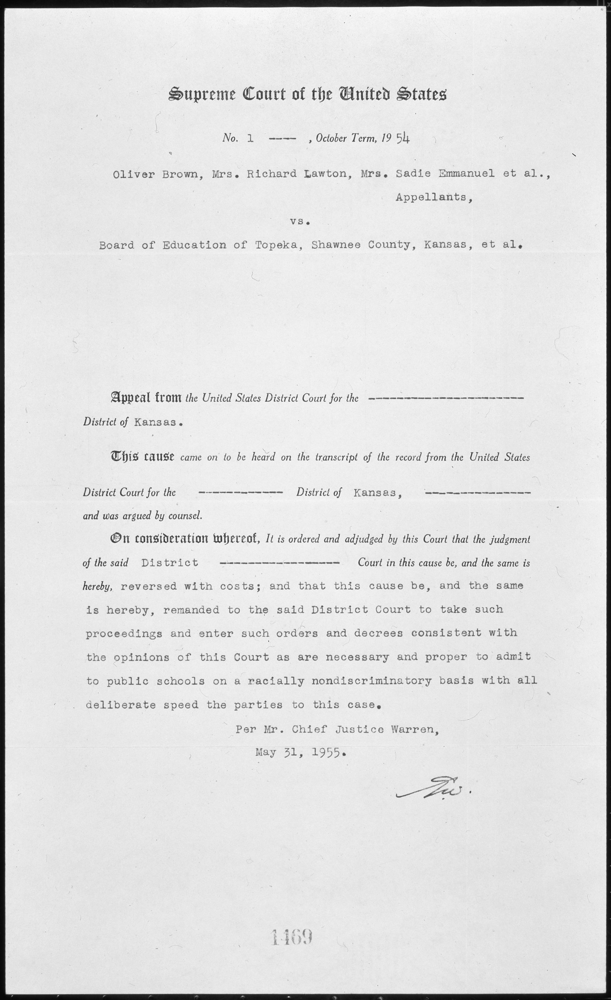

Directions: Study the document image and the background, then answer the questions.

Background. On May 17, 1954, in Brown v. Board of Education, the Supreme Court held unanimously that separate educational facilities are inherently unequal and that segregation in public schools violates the Fourteenth Amendment. The Court then heard a second round of argument on how the ruling would be carried out. The document in the image is the judgment and decree issued on May 31, 1955, in Brown II. It ordered a prompt and reasonable start toward compliance and directed admission with all deliberate speed. In Prince Edward County, Virginia, the public schools stayed closed from 1959 to 1964 rather than admit students without regard to race.
1. What is the document in the image, what date does it carry, and which decision does it carry out?
2. The road to the 1954 decision ran through the graduate schools. Name the two 1950 cases, the lawyer who argued them, and what each one established.
3. State the closing phrase of the Brown II order, and explain its effect in Prince Edward County between 1959 and 1964.
4. It is 1958. A governor says his state is not bound by Brown because his legislature never agreed to it. Answer him from Cooper v. Aaron, naming the article and the 1803 case the Court rested on.
1. What is the document? The judgment and decree in Brown v. Board of Education issued on May 31, 1955, the implementation decree of Brown II. It carries out the holding of May 17, 1954 that separate educational facilities are inherently unequal, by remanding the cases to the district courts to enter orders admitting the plaintiffs to public schools on a racially nondiscriminatory basis. (Blueprint 3)
2. Name the two 1950 cases and the lawyer. Sweatt v. Painter, holding that a hastily created Black law school in Texas could not equal the state university's law school, and McLaurin v. Oklahoma, ordering that a Black doctoral student admitted to a white university be treated like every other student. Both were argued by Thurgood Marshall, carrying out the strategy planned by Charles Hamilton Houston. (Blueprint 3)
3. State the phrase and its effect in Prince Edward County. The phrase is all deliberate speed. It contained no deadline, and officials across the South read it as permission to move slowly. In Prince Edward County the board of supervisors refused to levy school taxes after a court ordered admission without regard to race, and the public schools stayed closed from the fall of 1959 until 1964, while a private academy served white children and about 1,700 Black children had no formal schooling in the county. (Blueprint 4)
4. Answer the governor from Cooper v. Aaron. Cooper v. Aaron (1958), arising from Little Rock, held that Article VI makes the Constitution the supreme law of the land and that, under Marbury v. Madison (1803), the federal judiciary holds the duty of saying what the law is. The interpretation of the Fourteenth Amendment given in Brown is therefore binding on state officials, who are committed by oath to support the Constitution, and Brown rights can be nullified neither openly nor indirectly through evasive schemes. A legislature's disagreement does not release it. (Blueprint 4)
Teacher note. This check is formative. Question 3 is the entry diagnostic: students who treat all deliberate speed as a deadline will read the following decade as simple disobedience, while the documents show a timetable that invited delay and a resistance organized to use it. Question 4 predicts success on the activity verdict, because it requires the Cooper argument in its full sequence.